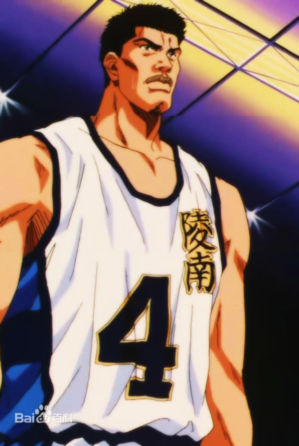
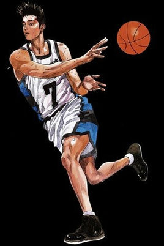
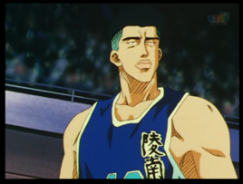

|

鱼住纯 Uozumi Jun |
鱼住在高一时加入陵南高校的篮球部，立即被陵南的教练田冈茂一看中他当时199cm的庞大身躯而认为是可造之材，因而对他特别严苛。可是鱼住曾受不了被队友视为“除了长得高大外，便什么也不会”及艰苦的训练，而萌生退队念头，后来被田冈教练劝服。在他高中一年级的第一场正式比赛后，鱼住受到了一致好评。到了高中二年级，陵南与湘北终于交锋。尽管陵南以压倒性的优势打倒湘北，可是鱼住却被赤木彻底冻结。这次单对单的败阵深深地刺激了鱼住，由于不服输的心态，他开始认真地锻链自己的体能及自我训练篮球的基础，使自己与赤木间的距离拉近。 |
|
|
高中时由东京被挖到神奈川县陵南高中，高一时是比流川枫名气还大的“新人王”，被称为“天才球员”，有着非凡的球技和领导力，是陵南篮球队的精神支柱，神奈川5位最佳球员之一，下一届的队长。 |

仙道彰 Sendoh Akira |
|
|

福田吉兆 Kicchou Fukuda |
在过去他只能在外面的篮球场练习，因为自尊心很强所以无法忍受田冈教练的训斥而攻击教练，没有参加对湘北的练习赛。他的目标是在进攻时成为仙道的搭档，他有很高的射篮技术，拥有卓越的进攻能力，但防守能力却相当差劣。视仙道彰为劲敌。但防御能力薄弱。 他也对樱木花道的能力感兴趣，在比赛时是他的对手。 |
|